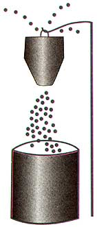

A friend, who is a professional painter, taught me this trick for killing wasps: Spray them on their nest with a solution of a little dish-washing detergent in a cup of water. They drop dead as soon as the detergent solution hits them.
I applied this new knowledge to another pest, the Japanese beetles that were destroying my mom's trees. Garden centers and hardware stores sell a Japanese beetle trap that only holds roughly 200 beetles in a disposable bag that you have to purchase-if you can find them-for $3 each. I figured out a way to improve the trap without having to purchase any more bags. The trap uses a pheromone scent packet to attract the beetles, which then drop through the funnel of the trap into the disposable holding bag. I simply cut the bag part off, leaving the funnel part. I then placed a 5-gallon bucket of water with a teaspoon of dish washing liquid under the funnel. You will kill beetles by the thousands.
ROBERT OWENS
Bowling Green,
Kentucky
Detergent sprays are also effective against many other garden pests, but will sometimes burn leaves of sensitive plants. For similar safe insect control with less risk of burning, use commercial insecticidal soap. Be sure to mix the soap with soft water (rainwater or distilled water); it won't work properly if you use hard water.-MOTHER
|
 MICHELLE BAKER |
|
|